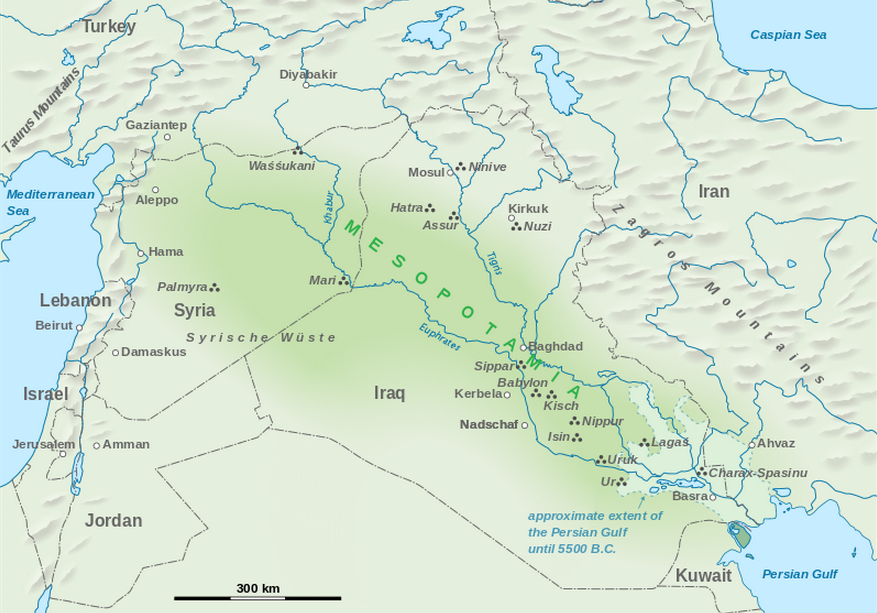
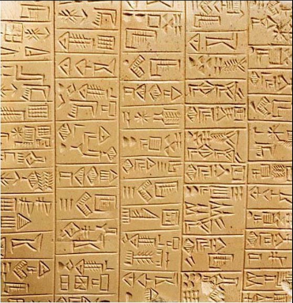
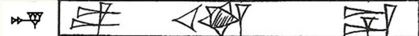
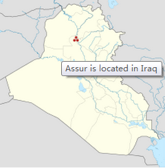
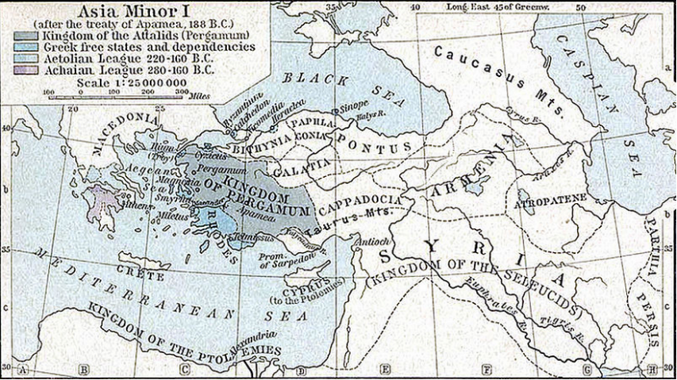
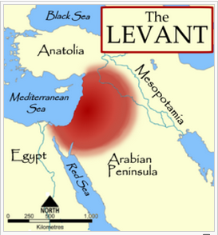

云英语
云英语：因学术而改变


从"亚述"（Assyria）到"叙利亚"（Syria）
北大六院的精神科医生王磊博士新近加入了云英语，帮助Y-GRE研修者进行考前心理调适，有效地缓解了很多学生临考的不良情绪。他不是语言学专业出身，但对语言和文化很感兴趣，也在学VB词汇建造师，了解了一些"比较语言学"（comparative linguistics）和"同源"（cognation＜co"together"-gna"generate"）的概念。有一天他突然想到了什么，问我："亚述国（Assyria）就是古代的叙利亚（Syria）吗？"
这个问题其实得从"两河"地区（Gk. Mesopotamia/Μεσοποταμία）说起。所谓"两河"，也音译为"美索不达米亚"，来自于古希腊语meso-=中间（与middle同源），potam-=湍急的河流（与"河马"hippopotamus同源），原指底格里斯河（Gk.Tigris）与幼发拉底河（Gk.Euphrátēs ）"河间之地"，进一步指整个"两河"流域。
【图为Mesopotamia河间之地】
"两河"地区与周边地理相对阻隔，文明不仅古老而且自成一体。"两河"文明（约3000B.C.-500B.C.）对古希腊古代文明以及由此以降的西方文明诸多方面都有很大影响。其实，今天我们的"星座"并不是希腊原产，而是巴比伦传过去的。
【图为zodiac黄道十二宫】
【zodiac同源于zoo，古希腊的12星座其实是12种动物]】
从时间粗略划分，"两河"前一半是苏美尔语统治（孤立），后一半是阿卡德语统治（闪语）（包括阿卡德，古/喀西特/新巴比伦，古/中/新亚述）。苏美尔语（Sumerian）和阿卡德语（Akkadian）的记号体系都是楔形文字（cuneiform），著名的汉谟拉比法典（The Code of Hammurabi）就是用阿卡德语写的。
【图为cuneiform tablet楔形文字泥板】

【图为The Code of Hammurabi汉谟拉比法典】
于是说到我们今天的"亚述"（Assyria＜Gk.Assyria），这个词来自于阿卡德语Aššur。Aššur既是地名，也是神的名字。至于"叙利亚"（Syria＜Gk.Syria），其实是"亚述"（Assyria）的缩短形式；希罗多德（Herodotus）写《历史》（Gk.Historiai/Ἱστορίαι）的时候,就已经用Syrioi来称谓亚述人。
【图左为阿卡德语中Aššur的写法】
【图右为阿卡德语中dA-šùr "太阳神"阿舒尔的写法】
【图为"古亚述王国首都"Aššur的地理位置】
其实是这样，新亚述被新巴比伦干废，新巴比伦被古波斯干废，之后就是大家都知道的马其顿的亚历山大来了！他有个部将塞琉古（Seleucus），亚历山大死后占了山头，这就是塞琉古帝国。从此两河就开始希腊化时代（Hellenistic period）。【希腊化是个很大的概念，亚历山大之后一直向东到印度都有希腊化的城邦，著名的犍陀罗（Sanskrit Gandhara गन्धार）文化就是希腊化的典型代表】
塞琉古帝国时，"叙利亚"不仅指原来的"亚述"即两河地区，也包括旁边的"黎凡特"（Levant ）。耳熟吗？伊拉克和黎凡特伊斯兰国！就是今天的叙利亚。（ISIS主要占据叙利亚东部和伊拉克北部）
 以上，大致说明白了"叙利亚"和"亚述"的关系，算是回答了王大夫的问题。为了怕他不满意，再讲个冷笑话。其实有一门很牛逼的学问"亚述学"（Assyriology），经常被误以为是所谓"数学"的一个分支"亚数学"。要知道，理论上讲，"亚述学家"是不懂"数学"的！
最后以苏美尔神话中著名的一句与大家分享，来增加本文的逼格，"老太太不说自己是老太太；老头儿不说自己是老头儿。"——苏美尔神话"Enki and Ninhursaga"
版权所有 2011-2015 北京云英一语教育咨询有限公司 Y-English All Rights Reserved
地址：北京市海淀区五道口华清嘉园商务会馆802
电话：400-876-3898 010-82863898 82863899 传真：010-82863897